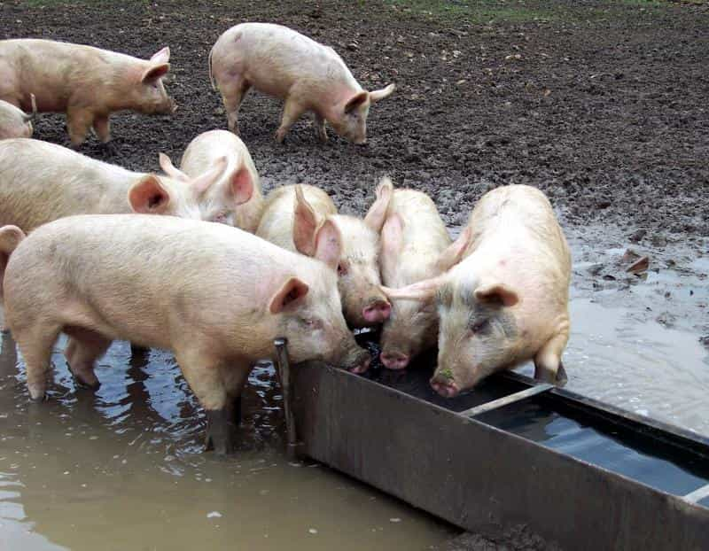
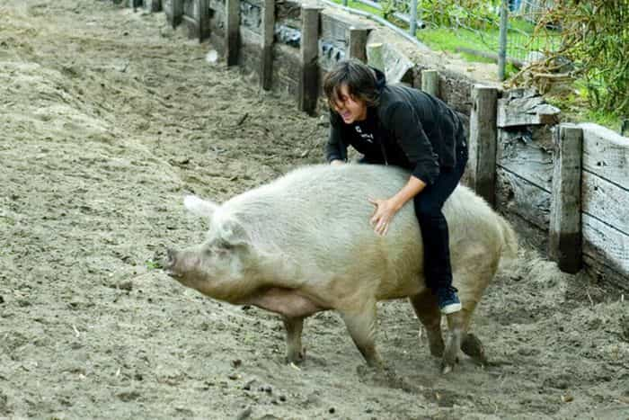
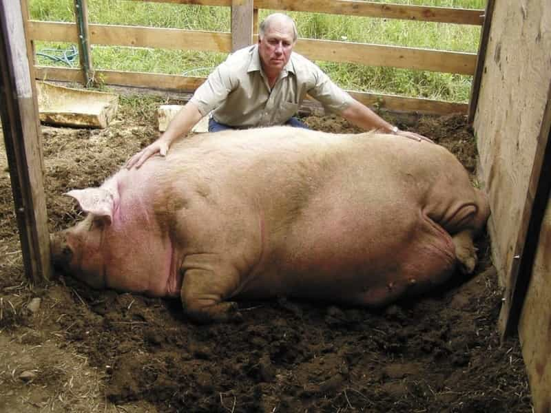
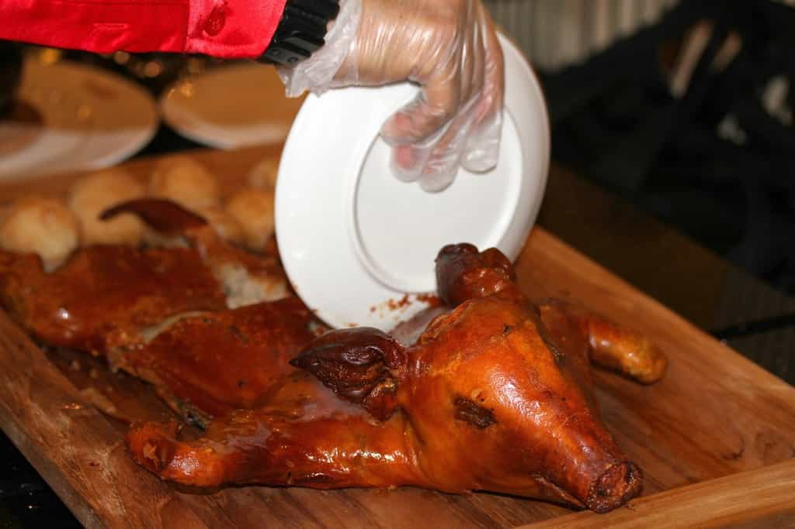

Papa Selo is a Croatian philosopher with an old soul. Aside from tending to his olive trees in the heart of Dalmatia, his singular passion is fjaka (doing absolutely nothing) in his village by the Adriatic sea.


As a joke once, I offhand mentioned that I would love a pet pig. Of course, I was on a Tinder date so naturally my girl did not hesitate to call out my bluff. Next thing you know, we were on a train riding deep into the Slovakian countryside. An exhausting half day later, and a one month old baby Bacon was on his merry way to a new home. Little did he know, however, that he was resting in the arms of his future butcher.
Yes, I did raise a pet pig. Yes, he was a pain in the ass, but most importantly, he was fucking delicious. Some of you may think this to be borderline psychopathic, but I can assure you this is simply nature, and a man has got to get his fix. This is especially true for Western men whose daily habits of consumption are woefully removed the real source of his nutrition.
Mark Zuckerberg was right though, it’s best to kill the meat you eat. I can tell you this, however, I would never, ever consider eating a dog or a cat. The thing is, without having lived with a pig for some time, I cannot blame anyone for thinking that they might make worthwhile pets. Mini pigs have, after all, been flooding Instagram lately, and while they seem intelligent and highly sociable, I can guarantee you that after spending enough time with one you will see them less as friends and more as food.

The following are five reasons you should absolutely avoid adopting a pig as a pet and eat it instead.
Pigs, especially Gottingen “mini pigs” (the kind you see all over social media), are incredibly intelligent, though not in the way you’d imagine. You’d think that because it literally takes a day to teach your pig to potty train, and all of five minutes to teach it to spin for a treat, that they’d fetch your slippers or keep you warm at night.
On the contrary, they are selfish, repugnant, and hyper-intelligent in all the wrong ways. Unless it’s about their next meal, your commands will be not only be directly ignored but fucked with.
Instead of fetching your slippers they’ll shit on them without remorse, as if keenly aware that ruining your property would be insulting to you. Instead of sleeping next to you, ready, and waiting in guard position, they will find a comfy spot squarely on your forehead, burrow down and screech to high heaven if you motion to remove them. Rinse and repeat they will, despite many deserved beatings. Brats.
Ran out of good food for the afternoon? Once they taste anything other than the pet store gruel you’re meant to feed them, there’s no going back. One day, I made the mistake of feeding baby Bacon too many apples and bananas.
After one late evening at work, I returned to what appeared to be a walking skeleton. So used to the sweetness of a rich red apple, my little piglet refused to touch the overfull, brimming bowl of high-powered protein pellets I left him for the day. There’s a reason we call ungrateful people pigs.
Pigs shit and piss a lot. At two months old, baby Bacon would urinate approximately 8 times a day at his recommended daily consumption of 1 litre of protein-infused water. Shitting twice daily, that’s a load of crap! If you fail to empty its litter box every single day, you’re in for a grotesque surprise. One day after work I found a fully grown toadstool in his poop.
Needless to say, I was disgusted. On top of this, pigs mature extremely quickly, becoming sexually active at two to three months of age. Sooner than I could blink, baby Bacon was a teenager, leaving crusty white semen everywhere he went. I am not joking! Say goodbye to the sanctity of your blankets and pillows unless you keep your piggy away from you at night, and your bed coverings stored away during the day.
Clearly, my patience for the little porkchop would soon grow very thin. For all of the six effortless lays he got me via Instagram posts, his marginal value was clearly declining as a function of upkeep.

For all the flack I’ve given baby Bacon, he was entertaining at times, and did lead directly to a small number of lays over the two months I had fed and watched him grow. Unfortunately, I wasn’t pulling the numbers I thought I would by raising him.
Girls may think the experience novel, but ultimately they could care less. I did in fact notice a difference in reactions between women in different age groups, with MILFs being more confused than anything, and college girls getting overboard obsessed until they would rather it stop voraciously humping their legs.
At the end of the day, you will definitely lose more potential lays raising a pig, especially if you do so alone, because of the extra time it takes compared to biweekly night game. A pig will evoke some interesting reactions from the women you court, but unless you’re not totally bored with your life it’s best to just stick with what works, and don’t venture too far from a German Shepard.

At three months of age, baby Bacon was 20kg, the weight of an average dumbbell and growing uglier by the day, sprouting a beakish mouth in place of the cute button nose he proudly displayed when I first wrestled him away from the desperate clutches of his birthmother. While the novelty of a baby pig, much less a mini pig, is an amazing opener, especially for online game via Instagram or Facebook, you’ll be hard pressed to even take the fucker on walks so unless you plan on personally slaving over your living cutlet at home all day long, what’s the point really?
The tiny spring porklet I rescued from definite farm slaughter just a few months prior was growing into a beast and fast, at a rate of 5kg, then 10kg in the first and second month, respectively. While a true mini pig is supposed to be grow slowly, I did read online prior to purchasing it for $50 at the farm that you can never really know ahead of time.
The reality is pigs come in all shapes and sizes. Their growth is too hard to predict without observing them closely for a few months. They also all lack a hunger inhibition so without discipline it is very easy to overfeed them. Even small deviations from their optimal diet can lead to unexpectedly fast growth.
All in all, it was getting to be much more work measuring his meal portions than merely resigning to the meal I would soon come to make of him. So, at the end of the day I decided to fire up a special roast. Ultimately, this little piggy really did live up to its name.
Assuming you own a pet pig and have followed along, you should by now know what you’re going to have to do:
When disposing of a baby piglet, it’s important to remember not to startle it before execution. The meat is most succulent when little cortisol is running through its fibres, so it is best to get it drunk beforehand. Here are the preparation instructions and recipe:

There’s really not much to it! The naturally high fat content of a baby suckling pig will cause it to be extremely juicy, and will make it very difficult to overcook or burn. Don’t be a bitch. Eat your pig. Bon Apetit! Dobar Tek!
Read Next: How To Identify A Roast Beef Vagina